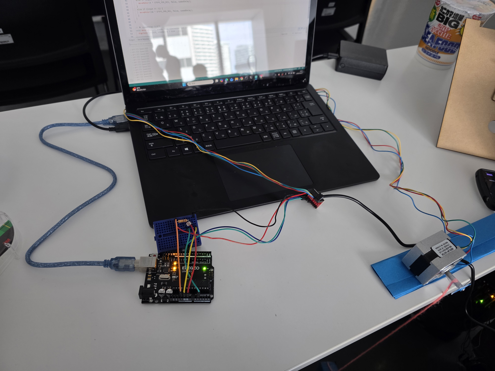
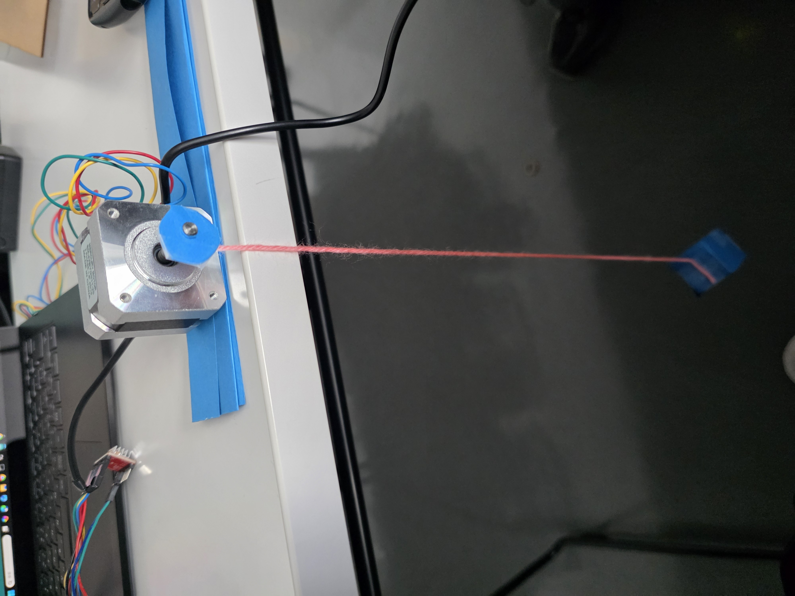

モーターを活用した創作
今回はarduinoとモーターを活用して簡易エレベーターのシステムを作りました


ソースコード
const int DIR = 8;
const int STEP = 9;
const int LIGHT_SENSOR = A0; // 光センサー追加
const int STEPS_PER_REV = 200;
// 速度の範囲（調整ポイント）
int minDelay = 300; // 明るいとき（速い）
int maxDelay = 2000; // 暗いとき（遅い）
void setup() {
pinMode(DIR, OUTPUT);
pinMode(STEP, OUTPUT);
Serial.begin(9600);
}
void loop() {
// ★ 常に明るさを読む（回ってなくても更新）
int lightValue = analogRead(LIGHT_SENSOR);
// ★ 明るさ → 速度に変換
int speedDelay = map(lightValue, 0, 1023, minDelay, maxDelay);
// デバッグ（任意）
Serial.print("Light:");
Serial.print(lightValue);
Serial.print(" Speed:");
Serial.println(speedDelay);
// ★ 回転の命令は今まで通り
if (Serial.available() > 0) {
int input = Serial.parseInt();
if (input == 2) {
moveMotor(5 * STEPS_PER_REV, true, speedDelay);
}
else if (input == 3) {
moveMotor(10 * STEPS_PER_REV, true, speedDelay);
}
else if (input == -2) {
moveMotor(5 * STEPS_PER_REV, false, speedDelay);
}
else if (input == -1) {
moveMotor(10 * STEPS_PER_REV, false, speedDelay);
}
}
}
// ★ speedDelay を追加
void moveMotor(int steps, bool clockwise, int speedDelay) {
digitalWrite(DIR, clockwise ? HIGH : LOW);
for (int i = 0; i < steps; i++) {
digitalWrite(STEP, HIGH);
delayMicroseconds(speedDelay);
digitalWrite(STEP, LOW);
delayMicroseconds(speedDelay);
}
}
2、3は階層を表すボタンと同じ役割で、-1,-2もマイナスが下に行くボタンと同じ役割で設定しています。
5回転で一階上がる十回転だと二階分上がるという設定です。
実際に動かす